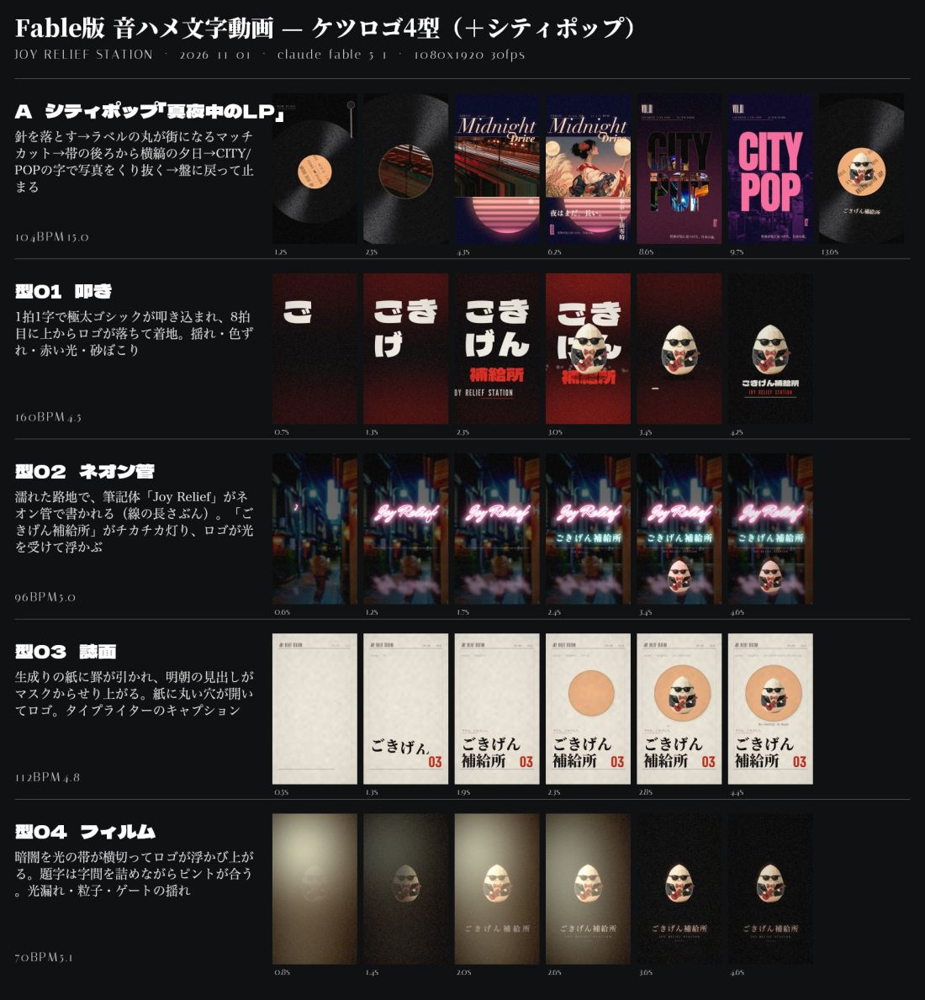
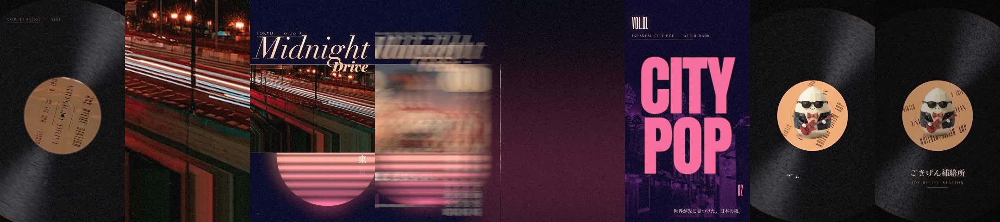
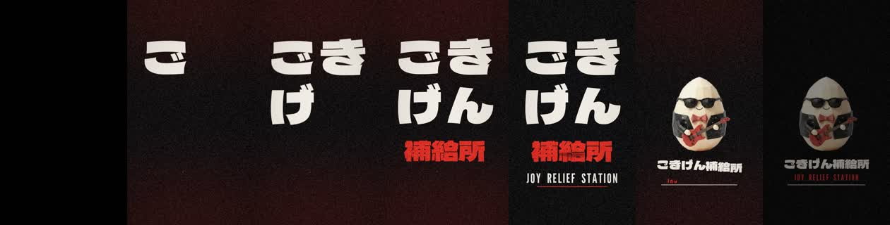
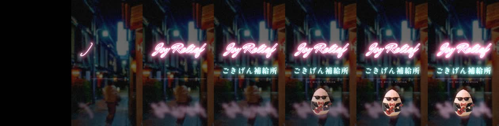
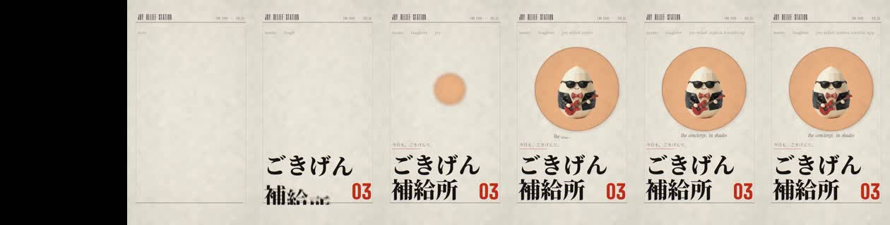
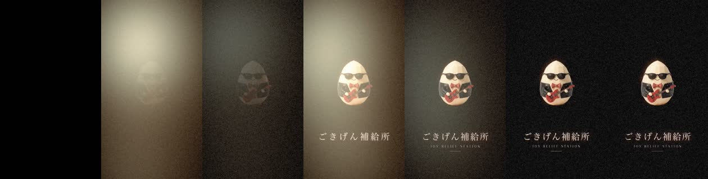

| 確認項目 | 結果 |
|---|---|
| 作ったモデル＝claude-fable-5-1 | 起動時に確認・queue の fixedModel |
| ロゴはサングラスのコンシェルジュだけ・最後だけ | egg-concierge-rocker.png のみ使用・下のコマ画像で確認 |
| 卵だけのロゴ・宇宙うんこの絵は不使用 | 使っていない |
| A を Drive に納品 | 2026-11-01 15:56 上げた（93MB） |
| B 4型＋一覧シートを Drive に納品 | 2026-11-01 17:16 上げた |
| この便だけの週枠の切り分け | 取れていない（同じ週枠を別のFable便と共有） |